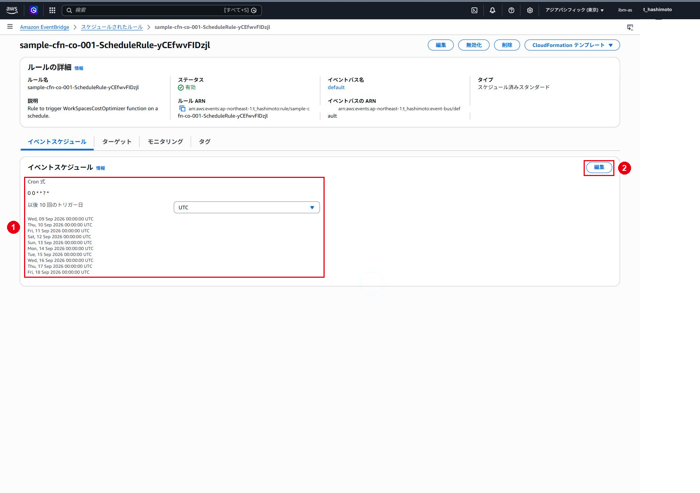
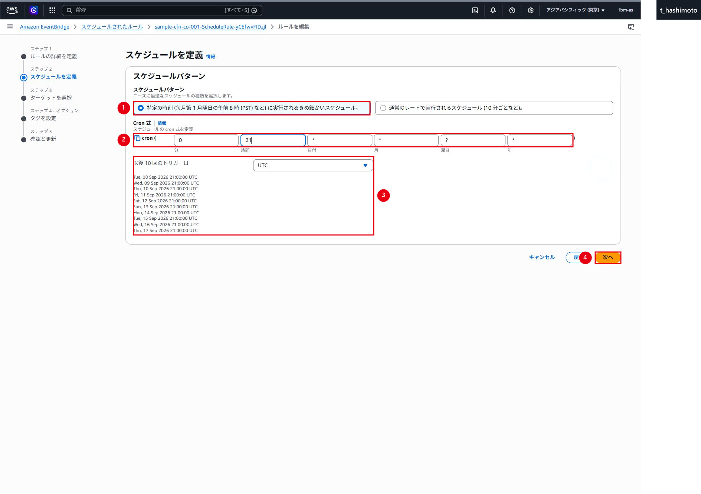
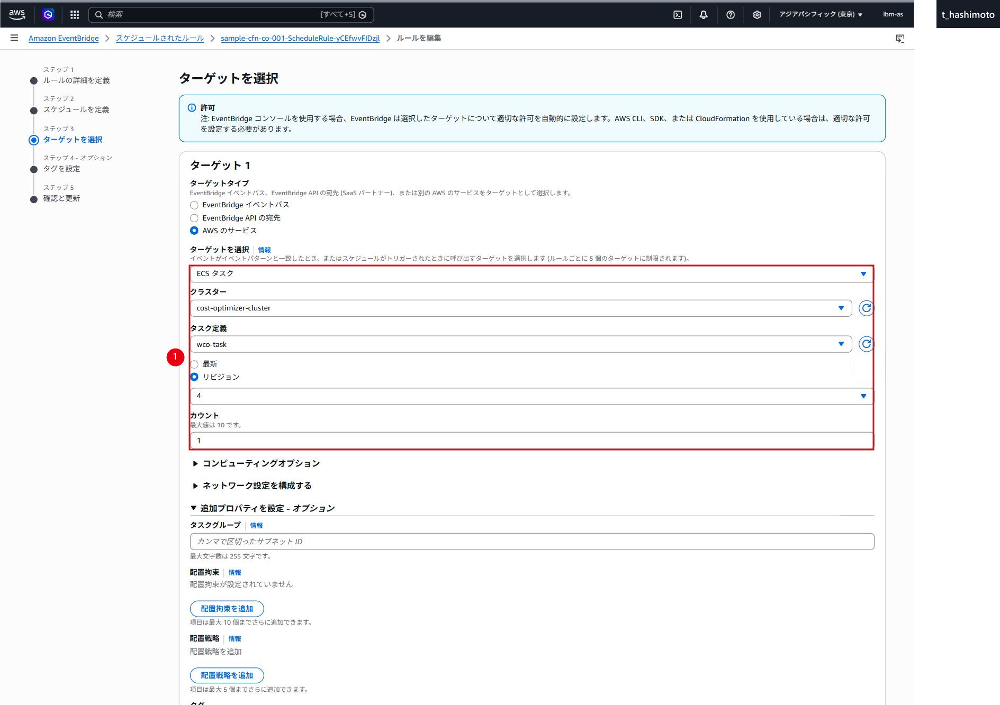
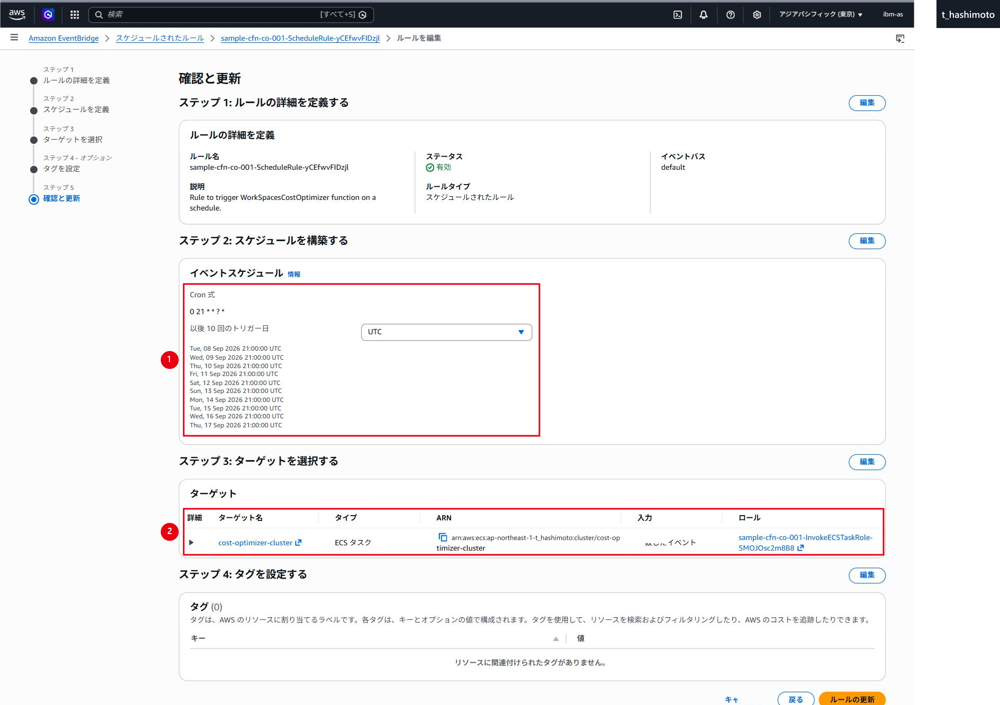
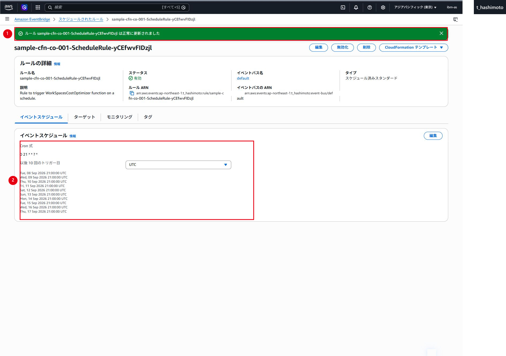
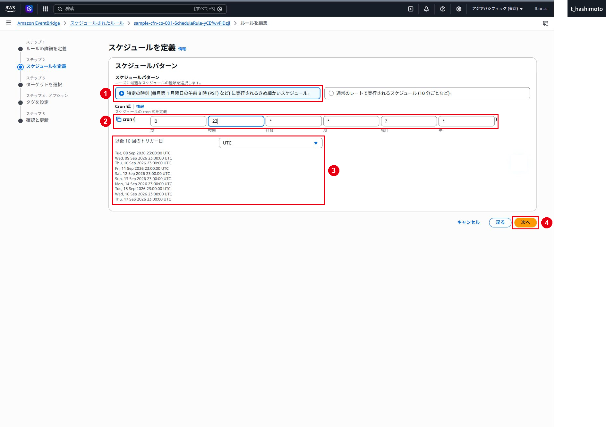
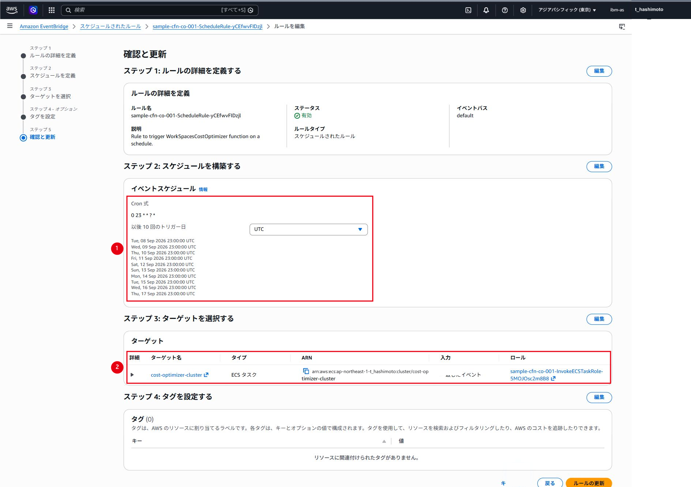
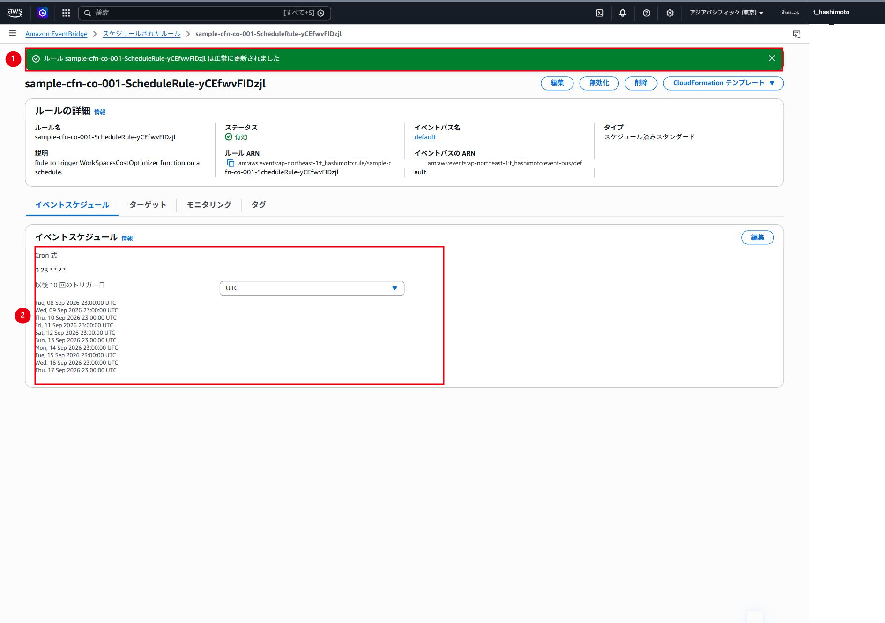
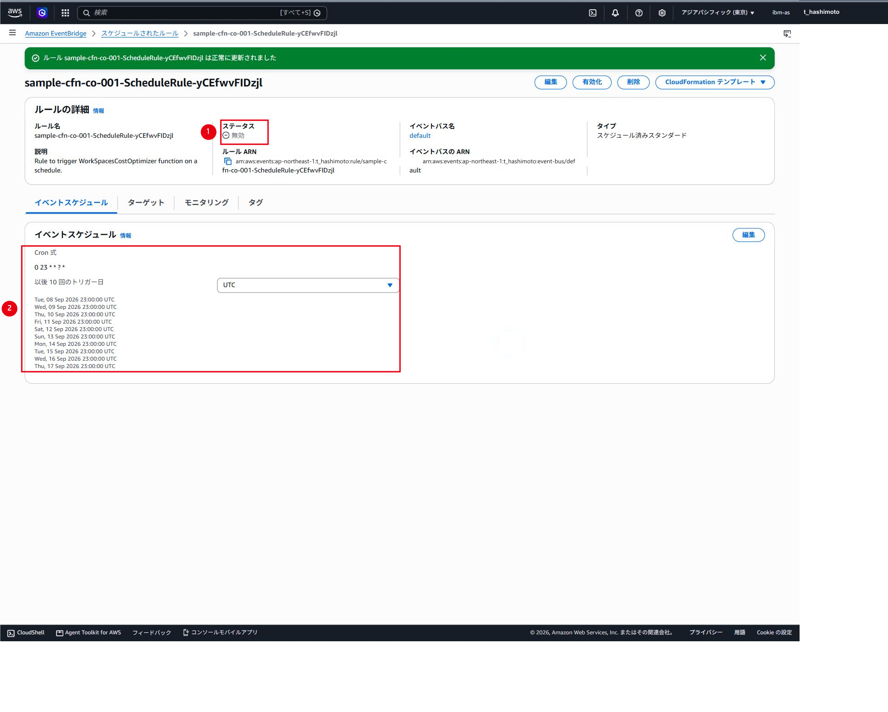

Cost Optimizerの実行スケジュール設定・変更
仕様
構成・動作
AWS公式ドキュメントでは、Cost OptimizerのEventBridgeルール設定を変更したり、ECSタスクを手動実行したりしないよう明記されています。1日複数回実行すると、請求対象時間および課金モード変換の判定が不正確になる可能性があるためです。
本章のEventBridge直接編集は、画面および動作を確認するために今回一時的に実施した記録です。本番環境の標準手順として実施してはいけません。
本番環境で例外的な時刻変更が不可欠な場合は、まずAWS Supportへ仕様影響を確認し、お客様のリスク承認を取得します。承認後はCloudFormationテンプレート内のScheduleExpressionを修正し、CloudFormation変更セットを使用して反映します。これにより、テンプレートと実リソースの差分（ドリフト）を防止します。
管理範囲
設定値は取得時点の検証例です。実作業では承認済みパラメータと現在のAWS環境を確認します。
制約事項
実行時刻の直接変更は過去の検証記録です。通常運用では既定スケジュールを維持します。
検証記録・変更方針
1. 検証した時刻と最終状態
EventBridgeのCron式はUTCで指定します。
| 時系列 | 用途 | 日本時間 | UTC | Cron式 | 結果 |
|---|---|---|---|---|---|
| 1 | 検証開始時の設定 | 毎日09:00 | 毎日00:00 | cron(0 0 * * ? *) |
変更前の状態を確認 |
| 2 | お客様環境の設定値 | 毎日06:00 | 毎日21:00 | cron(0 21 * * ? *) |
入力・更新・反映を確認 |
| 3 | 今回の復元先 | 毎日08:00 | 毎日23:00 | cron(0 23 * * ? *) |
入力・更新・反映を確認 |
| 4 | 二重実行回避 | - | - | cron(0 23 * * ? *)を保持 |
ルールを一時的に無効化 |
2026年9月8日時点の最終状態は、Cron式がcron(0 23 * * ? *)、EventBridgeルールが「無効」、CloudFormationパラメータがDryRun=Noです。Cron式は今回の復元先へ戻っていますが、ルールを再有効化するまでスケジュール実行は開始されません。
2. 取得済みの直接編集記録
ℹ️ 情報：以下は実施済みの検証操作の記録
通常運用で繰り返す操作ではありません。実環境の変更が必要な場合は、後述の「例外的カスタマイズとして変更する場合」を確認します。
検証開始時の確認
検証開始時はcron(0 0 * * ? *)です。00:00 UTC、すなわち09:00 JSTの設定でした。これは今回の復元先の08:00 JSTとは異なります。

お客様環境の06:00 JSTを検証
「特定の時刻」を選択し、時間へ21を入力します。画面上のCron式が0 21 * * ? *、次回トリガーが21:00 UTCとなっていることを確認して「次へ」を選択します。

ターゲットがECSタスク、クラスターがcost-optimizer-cluster、タスク定義がwco-task、リビジョンが4となっていることを確認します。時刻以外の設定は変更しません。

確認画面でCron式とターゲットを再確認します。

確認後、画面下部までスクロールし、「ルールの更新」を選択します。
更新成功メッセージ、0 21 * * ? *および21:00 UTCの次回トリガー一覧を確認しました。

今回の復元先の08:00 JSTへ戻す
時間を23へ変更し、Cron式が0 23 * * ? *、次回トリガーが23:00 UTCとなっていることを確認します。

確認画面でCron式とターゲットを再確認します。

確認後、画面下部までスクロールし、「ルールの更新」を選択します。
更新成功メッセージ、0 23 * * ? *および23:00 UTCの次回トリガー一覧を確認しました。

UTC同日内の二重実行を回避
検証当日は実行時刻を複数回変更したため、同一UTC日内に複数回起動しないようEventBridgeルールを一時的に無効化しました。無効化後もCron式は0 23 * * ? *のまま保持されています。

3. 再有効化と初回実行確認
EventBridgeルールは、前回実行と次回実行が同一UTC日にならない時刻に再有効化します。再有効化後は、次回トリガーのUTCとJSTを換算し、想定した日付・時刻となっていることを確認してください。
- Amazon EventBridgeの「スケジュールされたルール（レガシー）」を開きます。
sample-cfn-co-001-ScheduleRule-で始まる対象ルールを選択します。- Cron式が
0 23 * * ? *となっていることを確認します。 - 「有効化」を選択します。
- ステータスが「有効」になったことを確認します。
- 次回トリガーのUTCとJSTを換算し、想定した日付・時刻となっていることを確認します。
- 追加の手動実行は行わず、初回スケジュール実行を待ちます。
- 実行後、ECSタスク、CloudWatch Logs、S3レポートおよびCloudWatchダッシュボードを確認します。
4. 例外的カスタマイズとして変更する場合
AWS Supportの確認とお客様承認を得て本番時刻を例外的に変更する場合は、EventBridgeルールを直接編集せず、次の手順で変更します。
- AWS Supportの回答、変更理由、想定影響およびお客様承認を記録します。
- 対象スタックと使用中のCloudFormationテンプレートのバージョンを確認します。
- テンプレート内の
ScheduleExpressionだけを目的のCron式へ変更します。 - 対象スタックの更新画面で変更後テンプレートを指定し、変更セットを作成します。
- 変更セットを確認し、EventBridgeルールの予定した変更以外に、削除、置換または意図しない変更がないことを確認します。
- 作業承認後に変更セットを実行します。
- スタックが
UPDATE_COMPLETEになったことを確認します。 - EventBridgeルールのCron式、有効状態および次回トリガーを確認します。
- 初回実行後、ECSタスク、CloudWatch Logs、S3レポートおよびCloudWatchダッシュボードを確認します。
時刻を元に戻す場合も、ScheduleExpressionを戻したテンプレートから変更セットを作成し、同じ確認手順で反映します。
5. 運用上の注意
- Cost Optimizerは1日1回の実行を前提とします。
- 同一UTC日内にスケジュール実行と手動実行を重複させません。
- 時刻変更の動作確認を目的としてECSタスクを手動実行しません。
- 時刻を前後させる場合は、変更前後の次回トリガーを比較し、同一UTC日内に2回実行されない切替日時を選定します。
DryRun=Noでは実際の課金モード変更が発生し得るため、再有効化前に対象WorkSpaces、料金閾値および除外タグを確認します。
変更後確認
- UTCとJSTの変換、Cron式および次回トリガーを作業直前に確認すること。
- 同一UTC日内の重複実行を発生させないこと。
- AWS Support確認とお客様承認なしに本番時刻を変更しないこと。